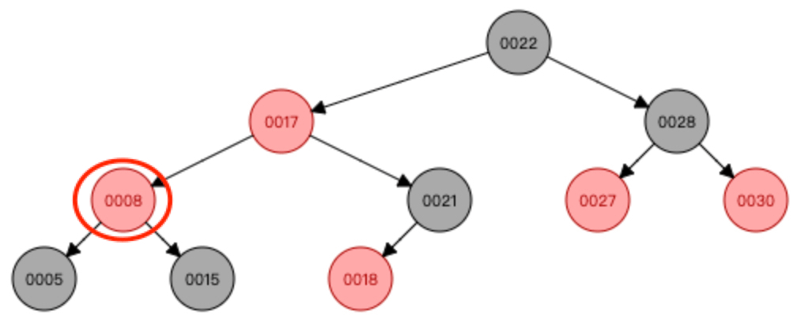
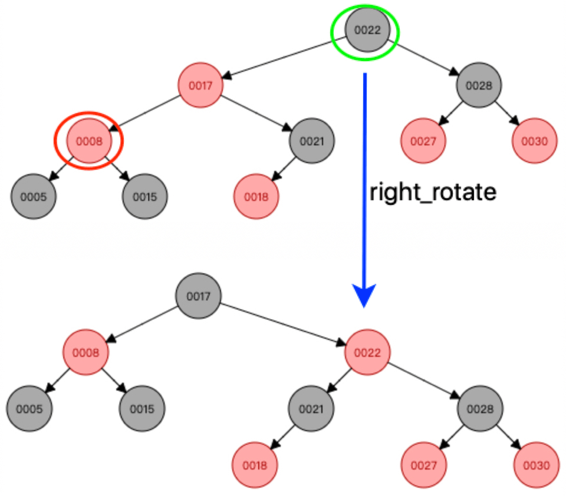

参考资料
二叉查找树
红黑树的添加节点
左旋与右旋
添加节点后调整
特殊情况 2 种调整
其他 3 种情况下的调整
叔叔节点红色
叔叔黑且 node 为父的右孩子
叔叔黑且 node 为父的左孩子
红黑树的删除节点
待删节点的 3 种状态
待删节点有 2 个非空孩子
待删节点没有子孩子
待删节点只有一个子孩子
删除待删节点
待删节点的转变过程
待删节点的删除
删除图示与变换调整
待删节点为红
待删节点为黑
待删节点黑且 child 黑（4 case）
other 为红
other 与 2 个孩子全黑
other 黑且其子左红右黑
other 黑且其子左黑右红
Published with GitBook
叔叔黑且 node 为父的左孩子
case 3 - 叔叔黑且关注节点为父的左孩子
关注节点 node，其叔叔节点黑色，并且关注节点 node 是其父的左孩子；
操作步骤：
将关注节点的父染黑，并将祖父节点染红
围绕关注节点node的祖父节点右旋；
根节点染黑；
调整结束。
接上 case 2，如下图示：

调整示意如下：

results matching "
"
No results matching "
"